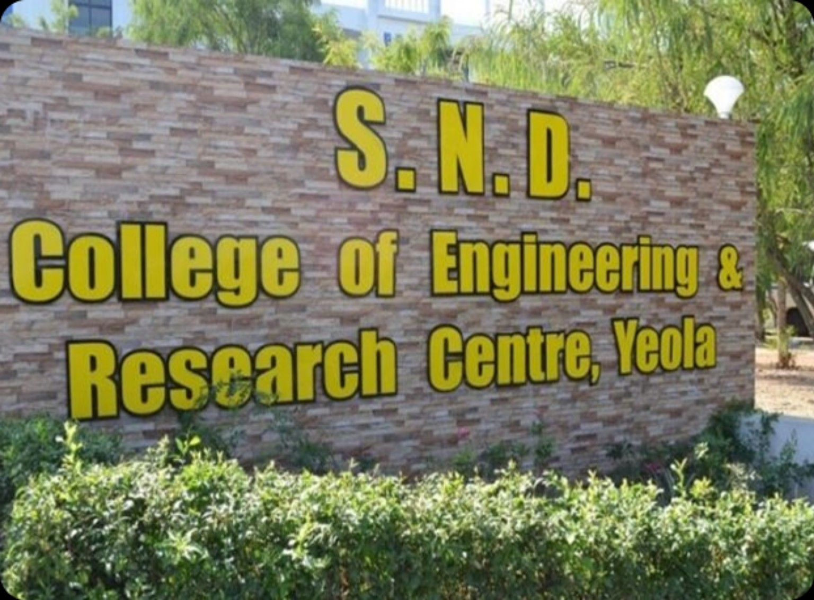
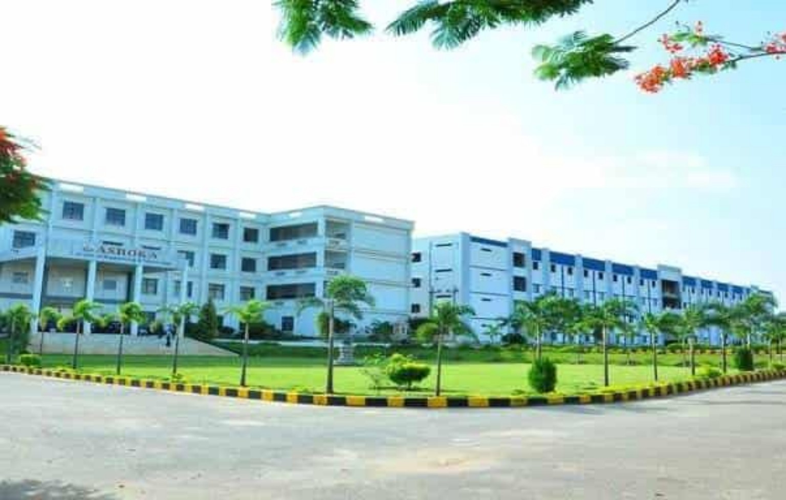

Python
Programming, automation, scripting and practical projects.
Mechanical Engineering graduate with professional experience as a Senior Analyst, building skills in Python, Excel, SQL, data handling, process automation and cloud technologies.
A practical, continuously learning technology professional.
I am a technology enthusiast with a background in Mechanical Engineering and professional experience as a Senior Analyst. My professional journey has helped me develop a strong foundation in Python, Excel, SQL, data handling, and process automation.
I have a growing interest in Python Development, AWS Cloud, automation, and data-driven solutions. I enjoy learning new technologies and applying them to practical projects that solve real-world problems.
Over time, I have worked on developing my technical skills through hands-on projects and continuous learning. My current focus is on strengthening my expertise in Python, AWS, SQL, automation, and cloud technologies while building practical and impactful solutions.
I believe in continuous learning, problem-solving, and improving through hands-on experience. I am currently looking for opportunities where I can contribute my existing skills, learn from experienced professionals, and grow as a technology professional.
My goal is simple: to build reliable, practical, and technology-driven solutions while continuously growing my skills.
Programming, automation, scripting and practical projects.
EC2, S3, Lambda, VPC, IAM and cloud fundamentals.
Queries, filtering, joins, data handling and analysis.
Data cleaning, reporting, analysis and automation.
Data-driven thinking, reporting and practical insights.
Process automation using Python and structured workflows.
eClerx Services Ltd. | Pune
The institutions that helped build my foundation.

Nashik – 423401

Polytechnic, Ahilyanagar – 413717
A Python-based scraper concept for extracting product information and storing structured results in Excel.
A practical software project concept for room booking, customer records and hotel operations.
Hands-on cloud learning covering core AWS services, deployment concepts and cloud architecture fundamentals.
Nature, personal moments and memories.
A space for genuine certifications and training records.
View the resume for a concise overview of my education, experience and skills.
Feel free to reach out for opportunities, projects or professional conversations.
📱 Mobile+91 93739 44683
✉️ Emailvishhal1997@gmail.com
📍 LocationChhatrapati Sambhajinagar, Maharashtra